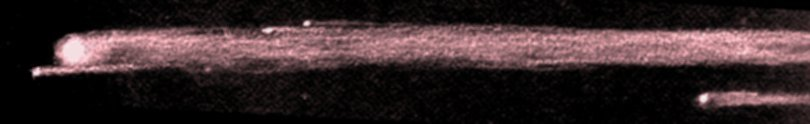

Dave North from Grant Ranch:
About 10:30 (okay, I didn't look at my watch) something started burning across the horizon, starting in the vicinity of Scorpius from our point of view. It was lowish, and incredibly slow ... much slower than the typical meteor.
There were two obvious sections - a brighter leading flare with a somewhat dimmer piece maybe 10 degrees behind it. About halfway across the sky, the dimmer object seemed to crap out.
We thought the main section looked like it might be calving slightly, in fact it was blowing chunks all the way out...
I thought "it has to blow any time now" and maybe give the best Fourth Of July fireworks show ever, but it turned out to be a classic Roman Candle ... just sputtering and flaring until it disappeared over the Diablo Range, leaving a crowd of muttering amateurs, until one person said, "well, maybe the sky is a little bright tonight, but we really got our money's worth there."
Indeed!
Akkana Peck from Grant Ranch:
It was amazing! Since it took so long to cross the sky, I was able to run to my 13.1" dob (fortunately I had a low-power eyepiece in it) and track it most of the way across the sky. Tiny pieces were breaking off the whole way (leaving trains of their own, but always parallel to the main object's train) and there was a tiny piece just ahead of the main object which remained there the whole time I tracked it.
The weirdest thing about it was the little fragments travelling with it. If this was a meteor gradually splitting up, I'd expect to see smaller bits separating and then following slightly different trajectories. But this followed a very straight line, and so did the tiny pieces splitting off of it every few seconds, and the bigger piece that had split off early and was trailing it by several degrees. Each of these small pieces left a trail of its own, which looked extremely parallel to the trail of the main piece. There was even a small piece preceding the main chunk, which had its own trail which blended in to the main trail.
Paul Mancuso from Glacier Point:
The sky was standard Glacier Point surperb. But what happened Saturday night was a once in a lifetime event. We had just settled in for the public event. The slide show was over and the ranger had given his talk. We were welcoming our guests to our telescopes when someone shouted out "meteor","in the south". Now normally when that happens by the time I look up its over but I looked up any way. It came in about as bright as Vega and stayed that bright until it burned up. It was bright yellow and left a great long trail dropping bits as it went from a little west of south to about east. I kept waiting for it to burn up and go out but it didn't. It went just about from horizon to horizon. It burned up just south of Half Dome and almost to it. I don't know how long it lasted. It seemed like forever but couldn't have been more than a minute. At the end the trail seemed to go farther than the bits. When it lit up all activity at our site stopped. There was hardly a sound from anyone, until it went out. Then everyone burst into applause. We must have had a hundred or more people visiting with us when it happened. Sunday, people who weren't with us Saturday but saw the event wanted to talk about it. It was a Glacier Point trip I won't soon forget.
Morris Jones from Yosemite:
Of course the Raduga 26 aux motor burn-in was a major crowd pleaser on Saturday night. Toward the end of the burn, I counted eight pieces in my 9x63 binoculars.
Nick and Craig Barth from Fremont Peak:
We were having a grand time in teaching mode, visitor on the eyepiece absorbing M 8, when someone shouted, "hey look!" and pointed into the Southeast sky. Blazing out of the microwave station, the large yellow fireball streaked north just below the arc of the Milky Way in the Eastern skies. Before it reached apogee in the Teapot, just as it approached Antares, it turned light green and started showering multi-colored flames earthward. Expecting it to snuff out, we stood transfixed, struck dumb & breathless, as it proceeded slowly but steadily northward. It continued to burn as it streaked behind the trees and hills on the Northern horizon to the east of Altair. Someone checked the time: 10:20 p.m. Wild applause and huzzahs from the mountaintop.
Christopher Angelos from Bonny Doon:
Saturday, 1 July 2000 at 22:20 hours PDT an object appeared to the right of the constellation Scorpius, azimuth 190 degrees, at about 20 degrees above the horizon. It moved across the sky at about the same altitude all the way to the eastern horizon, azimuth 90 degrees, for almost a minute. It's initial brightness was -6 or -7 magnitude, red in color, and shed small fragments like a roman candle. It also shed three larger fragments the second half of its flight accross the sky. In addition it was followed by a less bright, 1 or 0 magnitude object with the same color, and character, about 10 degrees behind. The follower appeared to be on the same trajectory as the brighter piece, but expired before reaching the eastern horizon. They might be pieces of an artificial satellite falling out of orbit because their velocity was much slower than the meteors I have seen in meteor showers.
Jane Houston Jones from Glacier Point:
We were at Yosemite with the San Francisco Amateur Astronomers and got to watch the horizon to horizon "fire-works" with a large crowd of stargazers at Glacier Point. We were of the opinion at the time that it was a re-entry of some man-made object. It was way cool, that's for sure! The Yosemite visitors were awestruck that we astronomers could order such brilliant fireworks at will! Mir, then Iridium satellites, and then the roman candle for a finale!
|  |